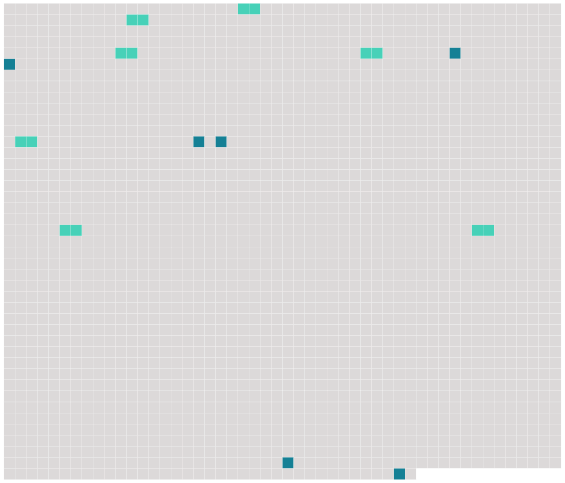

Longueur nb maillons : 13 mentions |
 |
Le consentement mutuel des époux ne sera point admis, si le mari a moins de vingt-cinq ans, ou si [la femme] est mineure de vingt-un ans. [3 phrases]
Il ne pourra plus l'être après vingt ans de mariage ni lorsque [la femme] aura quarante-cinq ans. [7 phrases]
Dans quelle maison [la femme] devra se retirer et résider pendant le temps des épreuves ;
Quelle somme le mari devra payer à [sa femme] pendant le même temps, si [elle] n'a pas des revenus suffisans pour fournir à [ses] besoins. [11 phrases]
Les notaires dresseront procès-verbal détaillé de tout, ce qui aura été dit et fait en exécution des articles précédens ; la minute en restera au plus âgé des deux notaires, ainsi que les pièces produites, qui demeureront annexées au procès verbal, dans lequel il sera fait mention de l'avertissement qui sera donné à [la femme] de se retirer, dans les vingt-quatre heures, dans la maison convenue entre [elle] et [son] mari, et d'y résider jusqu'au divorce prononcé. [10 phrases]
Si le commissaire du Gouvernement trouve dans les pièces la preuve que les deux époux étaient âgés, le mari de vingt-cinq ans, [la femme] de vingt-un ans, lorsqu'ils ont fait leur première déclaration ; qu'à cette époque ils étaient mariés depuis deux ans, que le mariage ne remontait pas à plus de vingt, que [la femme] avait moins de quarante-cinq ans, que le consentement mutuel a été exprimé quatre fois dans le cours de l'année, après les préalables ci-dessus prescrits et avec toutes les formalités requises par le présent chapitre, notamment avec l'autorisation des pères et mères des époux, ou avec celle de leurs autres ascendans vivans en cas de prédécès des pères et mères, il donnera ses conclusions en ces termes, La loi permet ; dans le cas contraire, ses conclusions seront en ces termes, La loi empêche. [38 phrases]
Dans le cas de divorce par consentement mutuel, la propriété de la moitié des biens de chacun des deux époux sera acquise de plein droit, du jour de leur première déclaration, aux enfans nés de leur mariage : les père et [mère] conserveront néanmoins la jouissance de cette moitié jusqu'à la majorité de leurs enfans, à la charge de pourvoir à leur nourriture, entretien et éducation, conformément à leur fortune et à leur état ; le tout sans préjudice des autres avantages qui pourraient avoir été assurés auxdits enfans par les conventions matrimoniales de leurs père et [mère] |
 |
La ressource peut être téléchargée sur la page Ortolang
Si vous avez des questions ou vous voyez des erreurs, merci d'envoyer un mail à silvia.federzoni89@gmail.com
Site développé par S. Federzoni (contact)